Partite affiancate
La pagina usa la larghezza dello schermo: due colonne di partite (e di schedine in «Le mie») su tablet, tre su PC 1280 e sulla TV, quattro su PC 1920 e monitor grandi. Sul telefono resta in verticale come prima.
Il Totogirrr su ogni schermo: partite affiancate su tablet, PC e TV, schede in alto più leggere e sempre leggibili sul telefono, Giro di boa senza la targhetta «6.1», sfondo del Totogirrr un po' più grigio «Esci» in fondo alla Home, Condividi in ordine, «‹ O Girrr» senza alone, cambio Lega/Stadio senza scatti Spogliatoio con i suoi sfondi e i colori della Lega, «C» della Curva che non porta alla Home.
La pagina usa la larghezza dello schermo: due colonne di partite (e di schedine in «Le mie») su tablet, tre su PC 1280 e sulla TV, quattro su PC 1920 e monitor grandi. Sul telefono resta in verticale come prima.
Tocca «Probabilità» o «Movimenti» quando sono tagliate sul bordo: la fila si sposta quanto basta per mostrarle per intero, senza centrarle. Prima restavano tagliate.
Al tocco il colore passa alla nuova scheda in un attimo (220 ms) e il pulsante non si rimpicciolisce più come se restasse premuto. Le schede sono più trasparenti, senza fascia scura dietro, e scorrendo verso il basso escono con la pagina.
Sui telefoni piccoli «Totogirrr» andava a capo dopo la T. Ora titolo e Fantacrediti sono un po' più piccoli e stanno sulla stessa riga.
Una pillola trasparente come quella della versione: «Esci da» e il nome della tua squadra, oppure «Esci» per l'ospite. Al primo tocco dice «Tocca di nuovo per uscire» per 3 secondi, al secondo esci e la Home si ricarica. Se non sei entrato non compare. Nel Totogirrr non c'è più «Esci».
Un velo grigio leggero sopra il blu, in Lega e Stadio, così il Totogirrr si distingue dalle altre pagine. L'oro resta in tutte e due le grafiche.
L'anteprima del video (e della Radio e delle immagini) prende l'altezza che resta dopo titolo e pulsanti: non si scorre più, anche su iPhone SE. Il testo di «Condividi» ora sta al centro del pulsante in tutte le finestre (prendeva lo stile di un'altra parte dell'app e scivolava a destra).
La 6.2.2 aveva tolto l'evidenziazione solo da una parte dei link: ora vale anche per «‹ O Girrr» dell'app (Carriera, Girrr Sport, Campo…). Niente contorno, niente anteprima del tocco lungo, e il link non resta illuminato al ritorno.
Prima la nuova Home arrivava a metà e mezzo secondo dopo comparivano di colpo l'avviso della versione e le Notifiche, con «Oggi al Girrr» che saltava giù (e il titolo che cambiava carattere). Ora sotto il titolo la pagina entra con una dissolvenza quando è completa.
Nello Spogliatoio le due grafiche avevano lo stesso sfondo. Ora la Lega è blu con le strisce e lo Stadio ha i riflessi rosso e azzurro, come nel resto del sito. Cambiando stile dal menu «Grafica» la pagina passa con una dissolvenza.
Toccando la «C» accanto a «Curva» si tornava alla Home. Ora non succede più: alla Home si torna con «O Girrr» nella barra in basso. Il corsivo della Curva nello Stadio resta com'era.
Le due file di pulsanti (Portieri, Difensori… e Punteggio, Giocherà di più, Vota meglio) erano disordinate. Ora ci sono due menu a tendina affiancati, anche su iPhone SE: a sinistra «Ruolo», a destra «Ordina per». Nella Lega bordo rosso e azzurro, nello Stadio oro.
Sopra «Il punto dopo la 7ª giornata» non c'è più «6.1 · Bilancio della stagione»: era il segno della versione in cui era nato, non serviva a chi usa l'app.
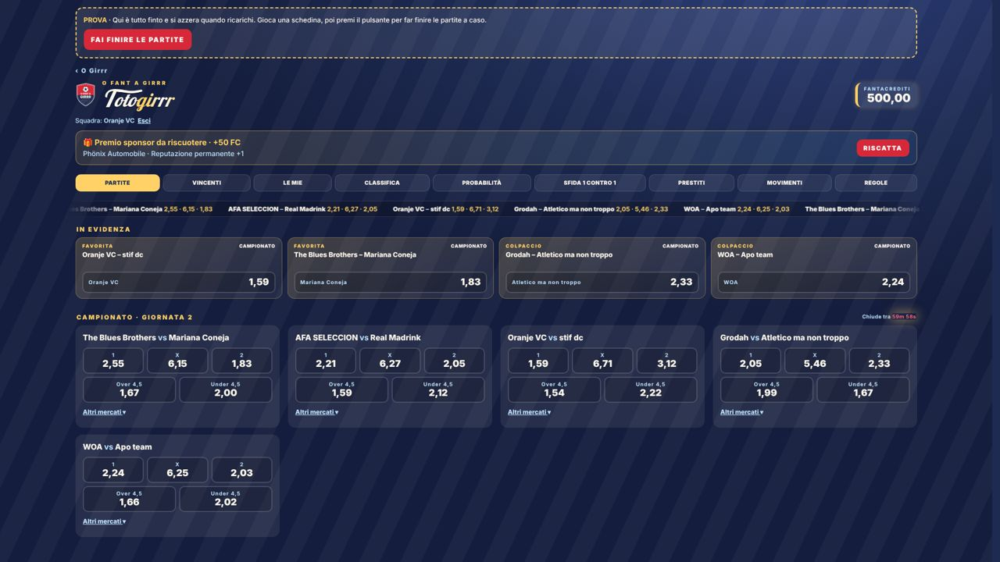
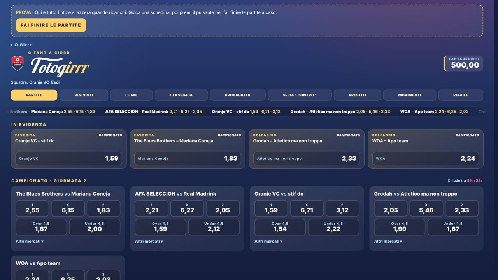
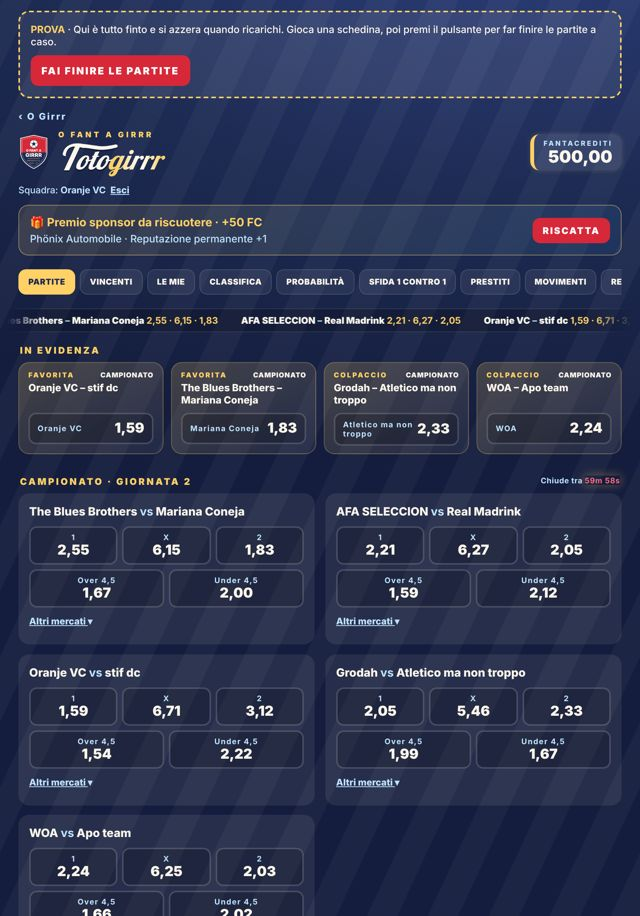
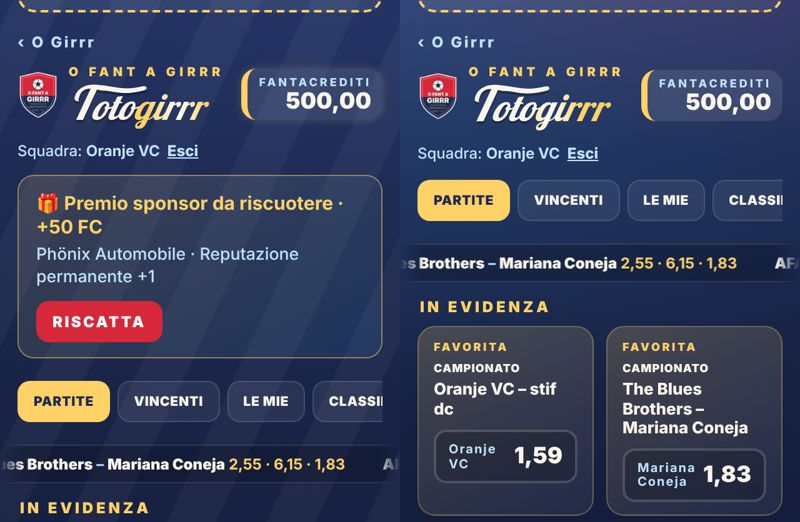
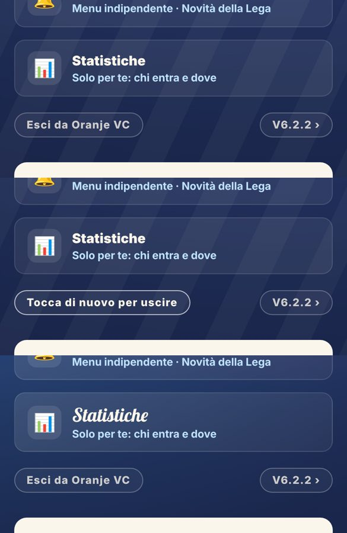
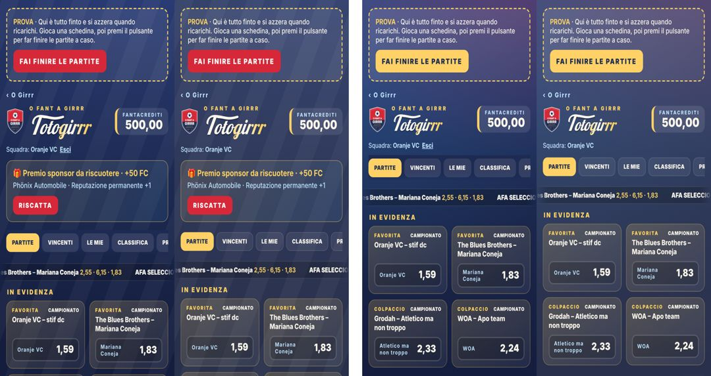
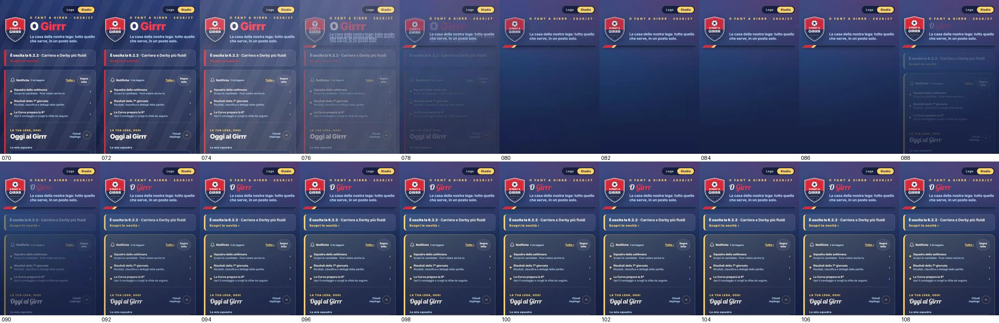
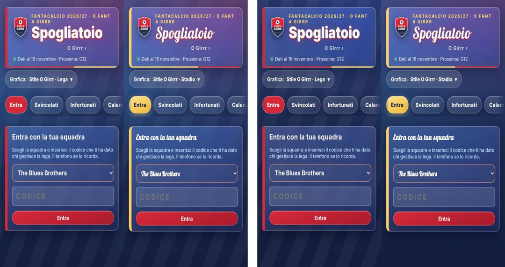
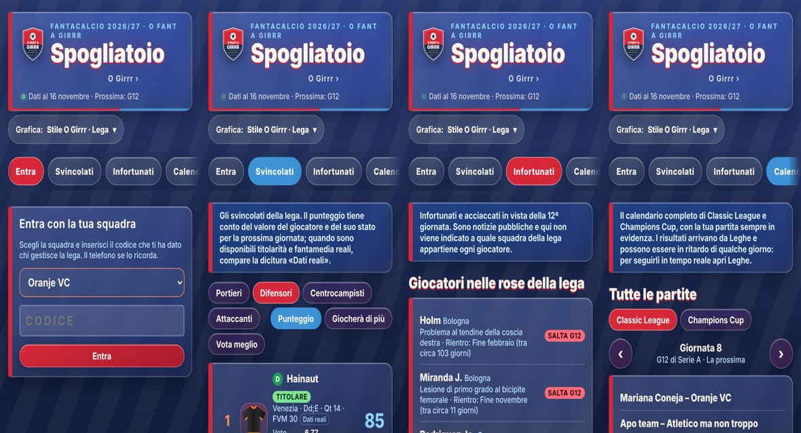
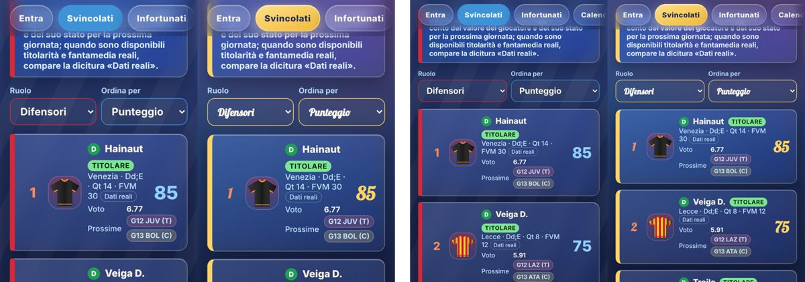
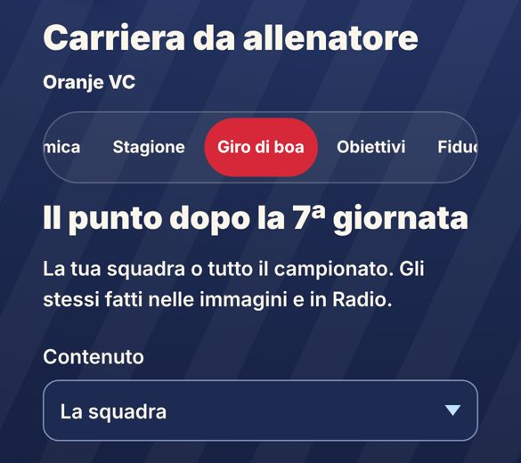